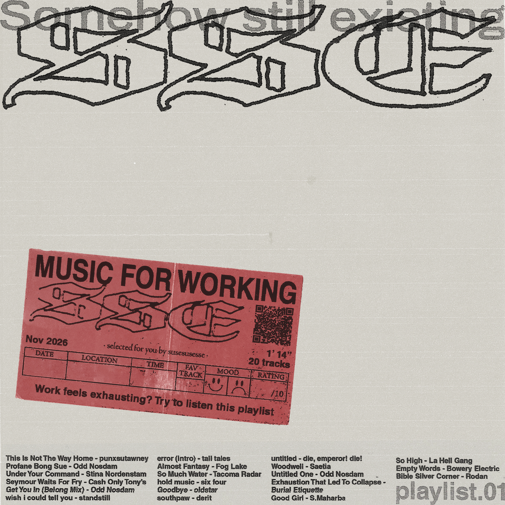
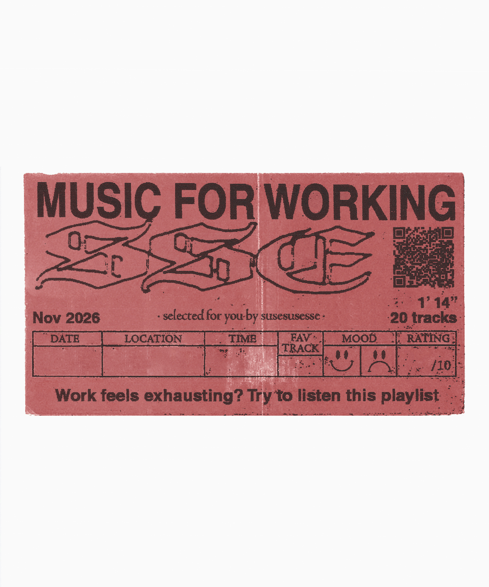

S.S.E. Music for working
Graphic design / Personal project
Playlist cover design. A playlist of music that I use for working a lot lately, even while putting this together. #musicforworking
I've also designed a feedback card with checkboxes for listeners to fill in and share their thoughts. A reinterpretation of the old radio feedback forms, adapted to a digital playlist accessed through a QR code.
2026

